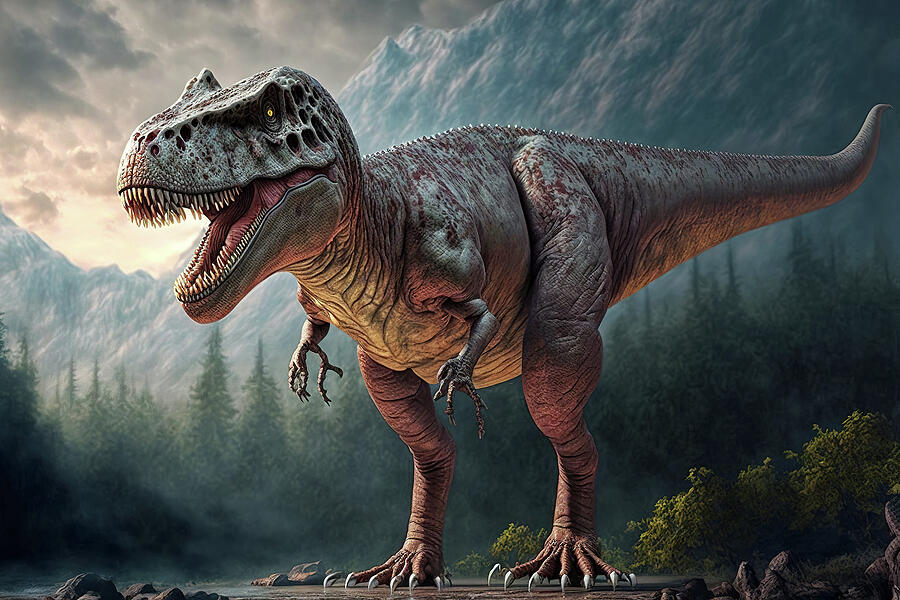

Acervo de descobertas arqueológicas
Uma coleção que viaja de volta ao período Cretáceo!
Descobertas de fósseis de Dinossauros
Tiranossauro Rex
Velociraptor
Tiranossauro Rex
O Tiranossauro Rex (Tyrannosaurus rex) foi um dos maiores carnívoros terrestres que já existiu, vivendo no final do período Cretáceo, entre 73,0 e 66,0 milhões de anos atrás.
podia atingir até 13 metros de comprimento e pesar entre 8 e 10 toneladas. O T. rex tinha uma mordida poderosa, com força estimada em mais de 6 toneladas, e uma cabeça enorme que media cerca de 1,5 metros de comprimento.
Este dinossauro era bípede, com pernas longas e musculosas, e era conhecido por sua habilidade de caçar e se alimentar de outros animais, incluindo outros dinossauros. O nome "Tiranossauro" significa "lagarto tirano rei", refletindo sua posição como um dos maiores predadores do seu tempo.
Para ter mais conhecimento sobre esse histórico dinossauro, Clique aqui.
Velociraptor
O Velociraptor era um dinossauro terópode que viveu durante o período Cretáceo, há cerca de 84 a 85 milhões de anos.
Ele era um carnívoro bípede, com uma longa cauda e garras em forma de foice nas patas traseiras, que podiam medir de 6 a 10 cm.
O Velociraptor era conhecido por sua agilidade e inteligência, tendo caçado em grupos e utilizado emboscadas para surpreender suas presas.
Para ter mais conhecimento sobre esse histórico dinossauro, Clique aqui.